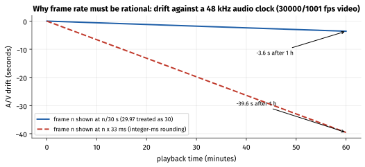
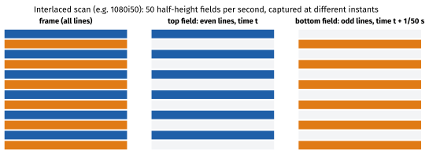
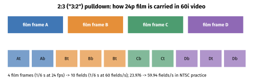
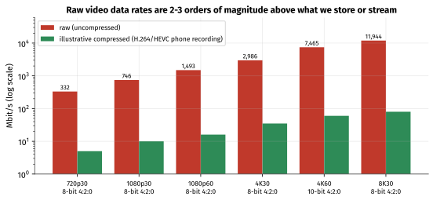
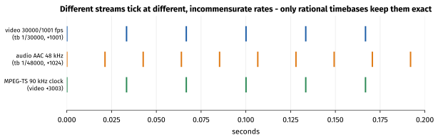
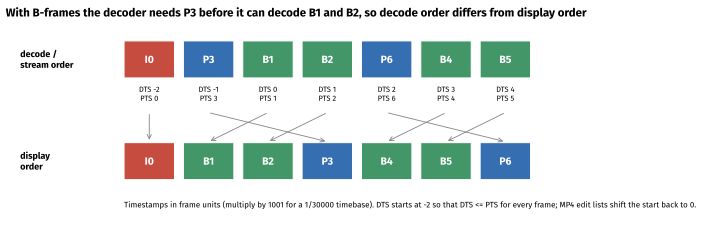

How to use this guide
This guide expands section 1.3 Digital Video Basics of the tutorial. Week 2 gave you a single image; this week adds time. Video bugs are very often timing bugs — drift, stutter, A/V offset, frames shown in the wrong order — and almost all of them come from treating time as a floating-point number instead of as an integer in a rational timebase.
| Session | Suggested activity | Time |
|---|---|---|
| 1 | Sections 1–2: frame rates, VFR, resolution, aspect ratio, rotation. Exercise A. | 2 h |
| 2 | Sections 3–4: scan types, pulldown, raw data rates. Exercise B (calculations). | 1.5 h |
| 3 | Section 5: timestamps and timebases. Exercises C and D. | 2.5 h |
| 4 | Section 6: colour metadata. Exercise E. Device lab: Exercise F on your phone. | 2 h |
| 5 | Self-test, answer key, update your "media facts" notebook. | 1 h |
Learning objectives.
- Express any frame rate as an exact rational number and compute the drift caused by approximating it.
- Distinguish
r_frame_ratefromavg_frame_rate, and constant from variable frame rate. - Compute display aspect ratio from storage size and sample aspect ratio, and handle rotation metadata.
- Explain interlacing and 2:3 pulldown well enough to recognise them in a source.
- Compute raw video data rates and compression ratios for any format.
- Explain PTS, DTS and timebases; convert timestamps exactly between MP4, MPEG-TS,
MediaCodec(µs) andCMTime. - Read and set the four colour-metadata fields and predict what a mismatch looks like.
1. Frames and frame rates
1.1 Motion from stills
A video is a sequence of still images (frames) shown in quick succession. Above roughly 16–24 frames per second we perceive continuous motion; higher rates make fast motion smoother and reduce judder (uneven motion) and motion blur trade-offs. The frame rate is how many frames are shown per second.
| Rate | Exact value | Where you meet it |
|---|---|---|
| 23.976 | 24000/1001 | Film content transferred for NTSC-region video and streaming |
| 24 | 24/1 | Cinema, "cinematic" phone modes |
| 25 | 25/1 | PAL/SECAM regions (including India's broadcast heritage) |
| 29.97 | 30000/1001 | NTSC-region video; many phones in "30 fps" mode actually record 30/1, some 30000/1001 |
| 30 | 30/1 | Most phone recording, screen recording |
| 50 | 50/1 | PAL-region HD/broadcast, sport |
| 59.94 | 60000/1001 | NTSC-region HD, some phone 60 fps modes |
| 60 | 60/1 | Phone 60 fps recording, games, UI |
| 120 / 240 | 120/1, 240/1 | Slow-motion capture |
1.2 Why 1001?
When colour was added to American (NTSC) television in the 1950s, the frame rate was reduced by a factor of 1000/1001 to avoid interference between the new colour subcarrier and the sound carrier. The legacy survives: "29.97" is really 30 000/1001 = 29.970 029 97… fps, which is not 29.97 exactly and certainly not 30.
Always store frame rates as a numerator/denominator pair. FFmpeg uses AVRational, ffprobe prints 30000/1001, Media3 and MediaFormat.KEY_FRAME_RATE use a number (so be careful there), and Apple's CMTime is a value/timescale pair (CMTime(value: 1001, timescale: 30000) is one frame at 29.97).
1.3 The cost of approximating
Worked example — drift
A one-hour 30000/1001 recording contains 3600 × 30000/1001 = 107 892.1 frames.
- If a player times frames at 1/30 s each (treating 29.97 as 30), the video finishes in 107 892.1 / 30 = 3596.4 s: 3.6 s early against an audio track that plays at the correct 48 kHz rate.
- If a muxer writes each frame's duration as a rounded 33 ms (instead of 33.3667 ms), the error is 1.1%: after one hour the video is 39.6 s ahead of the audio.
- With exact rational arithmetic — frame n at n × 1001/30000 s — the error is zero, forever.

The same applies to Android's MediaCodec, whose timestamps are integer microseconds. One frame at 30000/1001 is 33 366.67 µs, which is not an integer. Compute each timestamp from the frame index — ptsUs = n * 1_001_000_000L / 30_000 — rather than repeatedly adding a rounded duration, so rounding errors never accumulate.
1.4 Drop-frame timecode
Broadcast timecode (HH:MM:SS:FF) counts whole frames. At 29.97 fps, counting 30 frames per "second" makes the timecode run slow by 3.6 s per hour. Drop-frame timecode fixes the labels (not the frames): it skips frame numbers 00 and 01 at the start of every minute except every tenth minute. That skips 2 × 54 = 108 labels per hour, which matches the 107 892-frame hour almost exactly. Drop-frame timecode is written with a semicolon: 01:00:00;00.
1.5 Constant vs variable frame rate
Phones commonly record variable frame rate (VFR). In low light the camera lengthens the exposure, which may stretch the frame interval (for example from 33 ms to 40 ms or more); under load frames can be dropped. Every frame still has an accurate timestamp, so playback is correct — but tools that assume a constant rate get confused.
ffprobe reports two rates:
r_frame_rate— the "real base frame rate": the lowest rate that can represent all timestamps accurately. Often the nominal rate.avg_frame_rate— frames divided by duration. For VFR content it is a non-round number such as5994/200or11982/400.
If they differ, the file is probably VFR. Editing software, some hardware decoders and frame-accurate tools may need a constant-rate version (ffmpeg -i in.mp4 -fps_mode cfr -r 30 out.mp4), at the cost of duplicated or dropped frames.
2. Resolution, aspect ratio and rotation
2.1 Common resolutions
| Name | Pixels | Aspect | Pixels per frame |
|---|---|---|---|
| 480p (SD, NTSC-derived) | 720 × 480 or 640 × 480 | 4:3 or 16:9 (anamorphic) | 345 600 / 307 200 |
| 576p (SD, PAL-derived) | 720 × 576 | 4:3 or 16:9 (anamorphic) | 414 720 |
| 720p (HD) | 1280 × 720 | 16:9 | 921 600 |
| 1080p (Full HD) | 1920 × 1080 | 16:9 | 2 073 600 |
| 1440p (QHD) | 2560 × 1440 | 16:9 | 3 686 400 |
| 4K UHD | 3840 × 2160 | 16:9 | 8 294 400 |
| DCI 4K | 4096 × 2160 | ≈ 1.9:1 | 8 847 360 |
| 8K UHD | 7680 × 4320 | 16:9 | 33 177 600 |
2.2 SAR, DAR and PAR
Pixels are not always square. Three ratios describe the geometry:
- Storage aspect ratio = width ÷ height of the coded frame (e.g. 1440/1080 = 4:3).
- Sample (pixel) aspect ratio, SAR/PAR = the shape of one pixel (1:1 = square).
- Display aspect ratio, DAR = the shape of the displayed picture.
DAR = (width ÷ height) × SAR
Worked examples — anamorphic video
- HDV/broadcast 1440 × 1080 with SAR 4:3: DAR = (1440/1080) × (4/3) = 16/9.
- PAL widescreen 720 × 576 with SAR 64:45: DAR = 1.25 × 1.4222 = 1.7778 = 16:9.
- Phone recordings are almost always SAR 1:1 — but files edited or transcoded elsewhere may not be, and
ffprobeshows[SAR x:y DAR a:b].
2.3 Rotation metadata
Phone sensors are mounted in landscape orientation. When you record in portrait, most phones store landscape frames (e.g. 1920 × 1080) and attach a display matrix (MP4 tkhd matrix) telling the player to rotate by 90°. ffprobe prints this as side data, e.g. displaymatrix: rotation of -90.00 degrees, while width/height still say 1920 × 1080.
Consequences for app developers: a player or thumbnailer that ignores the matrix shows sideways video; code that computes layout from width/height without considering rotation gets the aspect ratio wrong; and MediaMetadataRetriever.METADATA_KEY_VIDEO_ROTATION / MediaFormat.KEY_ROTATION are how you read it on Android. FFmpeg auto-rotates when transcoding (disable with -noautorotate).
3. Scanning: progressive, interlaced and pulldown
3.1 Progressive and interlaced
Progressive video (the "p" in 1080p) transmits each frame as a complete image. Interlaced video (the "i" in 1080i) transmits fields: first the even lines, then the odd lines, each captured at a different instant. 1080i50 is 50 fields (25 interlaced frames) per second; it doubles motion smoothness for the same bandwidth, an analogue-era trick.

Phones capture and display progressively, but interlaced sources (broadcast TV, old camcorder footage, some IPTV) still arrive in apps. Shown without deinterlacing, moving edges show "combing" (alternate lines offset). FFmpeg's yadif and bwdif filters deinterlace; ffprobe reports field_order (progressive, tt, bb, tb, bt).
3.2 2:3 pulldown
How is 24 fps film carried in 60-field-per-second video? 2:3 pulldown (often called "3:2") repeats film frames for alternately 2 and 3 fields, so 4 film frames become 10 fields (= 5 interlaced video frames). Motion becomes slightly uneven (judder). Recovering the original 24p frames is inverse telecine (FFmpeg fieldmatch,decimate). In 25 fps regions, film is usually just sped up by 4% (24 → 25), which also raises audio pitch unless corrected.

4. Raw data rates
4.1 The formula
raw bit rate = width × height × samples per pixel × bits per sample × frames per second
where samples per pixel is 3 for 4:4:4, 2 for 4:2:2 and 1.5 for 4:2:0 (Week 2).
| Format | Calculation | Raw bit rate | Per minute |
|---|---|---|---|
| 720p30, 8-bit 4:2:0 | 1280 × 720 × 1.5 × 8 × 30 | 331.8 Mbit/s | 2.49 GB |
| 1080p30, 8-bit 4:2:0 | 1920 × 1080 × 1.5 × 8 × 30 | 746.5 Mbit/s | 5.60 GB |
| 1080p60, 8-bit 4:2:0 | 1920 × 1080 × 1.5 × 8 × 60 | 1.49 Gbit/s | 11.2 GB |
| 4K30, 8-bit 4:2:0 | 3840 × 2160 × 1.5 × 8 × 30 | 2.99 Gbit/s | 22.4 GB |
| 4K60, 10-bit 4:2:0 | 3840 × 2160 × 1.5 × 10 × 60 | 7.46 Gbit/s | 56.0 GB |
| 8K30, 8-bit 4:2:0 | 7680 × 4320 × 1.5 × 8 × 30 | 11.94 Gbit/s | 89.6 GB |
(GB = 10⁹ bytes.)

Worked example — compression ratios
- 1080p30 at 746.5 Mbit/s raw, recorded as H.264 at 16 Mbit/s: 746.5 / 16 ≈ 47:1. Streamed at 5 Mbit/s: ≈ 149:1.
- 4K60 10-bit at 7.46 Gbit/s, recorded in HEVC at 50 Mbit/s: ≈ 149:1 (the tutorial's Exercise 6).
- Bits per pixel normalises bitrate by resolution and frame rate: 16 Mbit/s ÷ (1920 × 1080 × 30) = 0.257 bpp; 5 Mbit/s → 0.080 bpp. Week 4 uses bpp to compare encodes.
4.2 Memory bandwidth, not just storage
Inside the phone, raw frames move between camera ISP, encoder, GPU and display many times. 10-bit content usually sits in memory as P010 (16 bits per sample), so 4K60 10-bit is 3840 × 2160 × 1.5 × 16 × 60 ≈ 11.9 Gbit/s ≈ 1.5 GB/s per pass. Each extra copy of every frame costs real power and thermal headroom — the reason for zero-copy pipelines, which you will meet in Phase 5.
5. Timestamps and timebases
5.1 Integers in a timebase
Media systems store time as an integer count of ticks in a timebase (a rational number of seconds per tick):
time in seconds = timestamp × timebase e.g. 3003 × 1/90000 = 0.033367 s
| System | Typical timebase | One frame at 30000/1001 |
|---|---|---|
| MPEG-TS / RTP video | 1/90000 (90 kHz clock) | 3003 ticks |
| MP4 track (FFmpeg default for 29.97) | 1/30000 | 1001 ticks |
| MP4 from Android recorders | often 1/90000 | 3003 ticks |
| QuickTime/older Apple files | often 1/600 | 20.02 ticks — not an integer, so durations alternate |
| Audio track | 1/sample rate, e.g. 1/48000 | (an AAC frame = 1024 ticks) |
Android MediaCodec / MediaExtractor |
microseconds (1/1 000 000) | 33 366.67 µs — round per frame from the index |
Apple CMTime |
value / timescale, any timescale | CMTime(value: 1001, timescale: 30000) |
| Media3 / ExoPlayer | microseconds internally |
Note the 90 kHz clock is divisible by 24, 25, 30, 50 and 60, and 30000/1001 gives an integer 3003 ticks, but 24000/1001 gives 3753.75 ticks — so 23.976 fps content in MPEG-TS has durations that alternate between 3753 and 3754. That is normal; what matters is that each timestamp is computed exactly.

5.2 Converting between timebases
To convert timestamp t from timebase a/b to c/d: t′ = t × (a/b) ÷ (c/d) = t × a × d / (b × c), computed in integer (64-bit) arithmetic with a single rounding at the end. FFmpeg provides av_rescale_q() for exactly this. Example: PTS 3003 at 1/90000 → 1/30000: 3003 × 30000 / 90000 = 1001; → µs: 3003 × 1 000 000 / 90 000 = 33 366.67 → 33 367.
/** Rescale a timestamp between rational timebases (num/den seconds per tick), rounding to nearest. */
fun rescale(ts: Long, fromNum: Long, fromDen: Long, toNum: Long, toDen: Long): Long {
val num = java.math.BigInteger.valueOf(ts) * (fromNum * toDen).toBigInteger()
val den = (fromDen * toNum).toBigInteger()
val (q, r) = num.divideAndRemainder(den).let { it[0] to it[1] }
return (if (r.shiftLeft(1).abs() >= den) q + num.signum().toBigInteger() else q).toLong()
}
// rescale(3003, 1, 90_000, 1, 1_000_000) == 33_367L
(For production code, 64-bit arithmetic is usually enough if you order the multiplication carefully; the BigInteger version is simply impossible to overflow.)
5.3 PTS and DTS
Each compressed video frame (a packet) carries:
- PTS (presentation timestamp) — when the frame should be shown.
- DTS (decoding timestamp) — when the frame must be decoded.
Without B-frames, frames are decoded in the order they are shown, and PTS = DTS (up to a constant). With B-frames — frames predicted from both a past and a future frame (Week 4) — the future reference must be decoded first, so decode order differs from display order:

Rules to remember:
- Packets are stored in a file in decode (DTS) order. Demuxers return them in that order; decoders output frames in PTS order.
- DTS is monotonically increasing; PTS is not (in packet order).
- For every frame, DTS ≤ PTS. To make that possible for the first P-frame, the DTS sequence starts slightly negative (or the PTS sequence starts slightly positive). MP4 stores DTS as sample durations (
stts) and the PTS−DTS offset as composition offsets (ctts); an edit list (elst) shifts the presentation timeline so playback starts at 0. - The decoder's reorder delay (how many frames it must hold before outputting) depends on the B-frame structure. More B-frames → more latency. Real-time video calls usually disable B-frames.
- Audio usually has PTS = DTS, but AAC/Opus encoders add priming samples: the first packets' PTS can be negative (−1024 for FFmpeg's AAC encoder), with an edit list or codec delay field telling players to skip them.
5.4 Timing on Android and iOS
MediaExtractor.getSampleTime()returns the PTS (µs) of the current sample, and samples come in decode order — so with B-frames the values you log are not increasing.MediaCodec: you passpresentationTimeUswith each input buffer; output buffers come back in presentation order with the matchingBufferInfo.presentationTimeUs. There is no separate DTS in the API; the codec handles reordering.MediaMuxer.writeSampleData()takes encoded samples in decode order with their PTS; it derives the DTS/cttsitself.AVFoundation:CMSampleBuffercarries bothpresentationTimeStampanddecodeTimeStampasCMTime. UseCMTimeConvertScaleor arithmetic in a common timescale; avoidCMTimeGetSecondsexcept for display.
6. Colour metadata
6.1 The four fields
Week 2 showed that the same Y′CbCr numbers can mean different colours. A video stream therefore signals how to interpret them, in the bitstream's VUI (H.264/HEVC video usability information) and/or the container (MP4 colr box of type nclx, Matroska Colour element). The code points are defined in ITU-T H.273:
| Field | Meaning | Common values (H.273 code → FFmpeg name) |
|---|---|---|
| Colour primaries | Which R, G, B and white | 1 bt709; 5 bt470bg (PAL SD); 6 smpte170m (NTSC SD); 9 bt2020; 12 smpte432 (Display P3) |
| Transfer characteristics | Code value ↔ light | 1 bt709; 6 smpte170m; 13 iec61966-2-1 (sRGB); 14/15 bt2020-10/-12; 16 smpte2084 (PQ, HDR10); 18 arib-std-b67 (HLG) |
| Matrix coefficients | Y′CbCr ↔ R′G′B′ (KR, KB) | 0 gbr (RGB); 1 bt709; 5 bt470bg and 6 smpte170m (both BT.601); 9 bt2020nc |
| Range | Limited or full | video_full_range_flag 0 → tv (limited), 1 → pc (full) |
Code 2 means unspecified, which is common in files from simple tools. Players then guess — usually BT.709 for HD sizes and BT.601 for SD sizes — and different players guess differently. That is why a clip can look right in one app and wrong in another.
6.2 On Android and iOS
- Android's
MediaFormatcarriesKEY_COLOR_STANDARD(COLOR_STANDARD_BT709,COLOR_STANDARD_BT601_PAL,COLOR_STANDARD_BT601_NTSC,COLOR_STANDARD_BT2020),KEY_COLOR_TRANSFER(COLOR_TRANSFER_SDR_VIDEO,COLOR_TRANSFER_ST2084,COLOR_TRANSFER_HLG,COLOR_TRANSFER_LINEAR) andKEY_COLOR_RANGE(COLOR_RANGE_LIMITED,COLOR_RANGE_FULL). Decoders report them in the output format; when encoding, set them explicitly. - Media3/ExoPlayer exposes them as
androidx.media3.common.ColorInfoonFormat.colorInfo. - On iOS,
CVPixelBufferattachments (kCVImageBufferColorPrimariesKey,kCVImageBufferTransferFunctionKey,kCVImageBufferYCbCrMatrixKey) carry the same information, and the pixel format itself encodes range ('420v'limited vs'420f'full).
6.3 Mismatch symptoms
| Mismatch | Symptom |
|---|---|
| Range: limited shown as full | Washed out: grey blacks, dim whites |
| Range: full shown as limited | Crushed shadows, clipped highlights, too contrasty |
| Matrix: BT.601 data decoded as BT.709 (or vice versa) | Subtle hue shift: skin tones slightly red/orange or green; saturated reds/greens off |
| Primaries ignored (e.g. P3 or BT.2020 shown as BT.709) | Desaturated or oversaturated colours |
| Transfer ignored (e.g. HLG/PQ shown as SDR) | Flat, grey, low-contrast image (HDR shown as SDR) |
7. Hands-on exercises
Expected outputs were produced with FFmpeg 7.1. Use testclip.mp4 (generated below) for deterministic results and a phone recording for the device lab.
Exercise A — Rates and timebases of a known clip
ffmpeg -f lavfi -i "testsrc2=size=1280x720:rate=30000/1001:duration=4" \
-f lavfi -i "sine=f=1000:sample_rate=48000:duration=4" \
-vf "setparams=color_primaries=bt709:color_trc=bt709:colorspace=bt709:range=tv,format=yuv420p" \
-c:v libx264 -preset fast -bf 2 -x264-params b-adapt=0 -g 30 -keyint_min 30 -sc_threshold 0 \
-c:a aac -b:a 128k -shortest testclip.mp4
ffprobe -v error -select_streams v:0 \
-show_entries stream=codec_name,profile,width,height,pix_fmt,r_frame_rate,avg_frame_rate,time_base,nb_frames \
-of default=noprint_wrappers=1 testclip.mp4
ffprobe -v error -select_streams a:0 -show_entries stream=codec_name,sample_rate,time_base \
-of default=noprint_wrappers=1 testclip.mp4
Expected:
codec_name=h264
profile=High
width=1280
height=720
pix_fmt=yuv420p
r_frame_rate=30000/1001
avg_frame_rate=30000/1001
time_base=1/30000
nb_frames=119
codec_name=aac
sample_rate=48000
time_base=1/48000
Why 119 frames? 4 s × 30000/1001 = 119.88, and only whole frames fit. Note that the video and audio tracks have different timebases in the same file.
Exercise B — Calculate by hand
- Raw bit rate of 1080p60 10-bit 4:2:2 (a typical professional camera format).
- The compression ratio if it is recorded at 150 Mbit/s.
- Bits per pixel of 720p30 at 2.5 Mbit/s and of 4K30 at 45 Mbit/s.
- The duration of frame 1000 (start time) at 24000/1001 fps, in seconds and in a 1/90000 timebase.
(Answers: self-test questions 15–18.)
Exercise C — See PTS and DTS
ffprobe -v error -select_streams v:0 -show_entries packet=pts,dts,duration,size,flags \
-of csv=p=0 -read_intervals "%+#10" testclip.mp4
ffprobe -v error -select_streams v:0 -show_entries frame=pts,pict_type \
-of csv=p=0 -read_intervals "%+#10" testclip.mp4
Expected — packets (decode order: pts,dts,duration,size,flags):
0,-2002,1001,24479,K__
3003,-1001,1001,18733,___
1001,0,1001,11315,___
2002,1001,1001,10171,___
6006,2002,1001,15433,___
4004,3003,1001,10631,___
5005,4004,1001,10012,___
9009,5005,1001,14775,___
7007,6006,1001,10703,___
8008,7007,1001,10167,___
and frames (display order): 0,I 1001,B 2002,B 3003,P 4004,B 5005,B 6006,P ….
Read it: timestamps are in units of 1/30000 s, so every frame is 1001 ticks. The packet order is I, P, B, B, P, B, B …, while the frame order is I, B, B, P … The P-frame with PTS 3003 is the second packet, decoded before the two B-frames it helps to predict. DTS starts at −2002 (two frames early) so that DTS ≤ PTS for every packet, and the MP4 edit list makes playback start at PTS 0. Only the first packet carries the K (key frame) flag. (Exact sizes can differ slightly between x264 versions.)
Add pts_time,dts_time to the entries to see the same values in seconds (0.000000, −0.066733, …).
Exercise D — Same stream, different container timebase
ffmpeg -i testclip.mp4 -c copy testclip.ts
ffprobe -v error -select_streams v:0 -show_entries stream=time_base -of csv=p=0 testclip.ts
ffprobe -v error -select_streams v:0 -show_entries packet=pts,dts -of csv=p=0 -read_intervals "%+#4" testclip.ts
Expected: time_base is 1/90000, and each frame now advances by 3003 ticks. The first packets look like 132006,126000 / 135009,129003 / … — the MPEG-TS muxer starts timestamps at an offset of about 1.4 s (126 000 / 90 000) by default, and PTS − DTS = 6006 ticks = 2 frames, the same reordering as before. Nothing in the video data changed; only the units and offset of time.
Also try -c copy testclip.mkv and check the timebase (Matroska uses 1/1000 by default, i.e. millisecond precision, so frame times are rounded — another reason MKV → MP4 remuxes sometimes show slightly irregular durations).
Exercise E — Colour metadata and rotation
ffprobe -v error -select_streams v:0 \
-show_entries stream=color_range,color_space,color_transfer,color_primaries -of default=nw=1 testclip.mp4
# Simulate a portrait phone recording: add a 90-degree display matrix without re-encoding
ffmpeg -display_rotation:v:0 90 -i testclip.mp4 -c copy rotated.mp4
ffprobe -hide_banner rotated.mp4 2>&1 | grep -E "Video:|displaymatrix"
Expected: color_range=tv, color_space=bt709, color_transfer=bt709, color_primaries=bt709. For rotated.mp4, the stream still says 1280x720, followed by displaymatrix: rotation of 90.00 degrees. Play both with ffplay (which honours the matrix) and open rotated.mp4 in a tool that does not; note which ones rotate.
Now remove the tags to see what "unspecified" looks like: re-encode without setparams and observe color_transfer=unknown / color_primaries=unknown.
Exercise F — Device lab: your phone's recordings
- Record ~10 s at 1080p30 and ~10 s at 4K60 (or the highest mode available), one in portrait and one in landscape, one in bright light and one in a dark room.
- Pull them:
adb shell ls -t /sdcard/DCIM/Camera | head -5
adb pull /sdcard/DCIM/Camera/<file>.mp4 .
- For each file, record in your notebook:
ffprobe -v error -show_entries format=duration,bit_rate:format_tags \
-show_entries stream=codec_name,profile,width,height,pix_fmt,r_frame_rate,avg_frame_rate,time_base,bit_rate,color_range,color_space,color_transfer,color_primaries:stream_side_data \
-of default=nw=1 <file>.mp4
ffprobe -v error -select_streams v:0 -show_entries packet=pts_time,dts_time,flags -of csv=p=0 -read_intervals "%+#12" <file>.mp4
- Compute: raw bit rate, actual video bit rate, compression ratio, and bits per pixel.
What to look for: the codec (H.264 vs HEVC), time_base (often 1/90000 on Android), whether avg_frame_rate differs from r_frame_rate in the dark recording (VFR), the display matrix on the portrait clip (commonly −90 or 90 degrees), whether PTS = DTS (many phone hardware encoders do not use B-frames for camera recording), colour tags (usually BT.709 limited range for SDR; BT.2020 + HLG or PQ for HDR modes), and vendor tags in format_tags (Android recordings often include com.android.version; some include com.android.capture.fps).
- Optional Kotlin check of the same file on the device:
val ex = MediaExtractor()
ex.setDataSource(context, uri, null)
var videoTrack = -1
for (i in 0 until ex.trackCount) {
val fmt = ex.getTrackFormat(i)
Log.i("Inspect", "track $i: $fmt")
if (fmt.getString(MediaFormat.KEY_MIME)?.startsWith("video/") == true) videoTrack = i
}
ex.selectTrack(videoTrack)
var n = 0
while (n < 12) {
val key = (ex.sampleFlags and MediaExtractor.SAMPLE_FLAG_SYNC) != 0
Log.i("Inspect", "sample $n: pts=${ex.sampleTime} us key=$key")
n++
if (!ex.advance()) break
}
ex.release()
The track formats print frame-rate, rotation-degrees, color-standard, color-transfer, color-range and durationUs. Sample times appear in decode order.
8. Common pitfalls
- Treating 29.97 as 30 or storing frame durations as rounded milliseconds — A/V drift.
- Accumulating rounded durations instead of computing timestamps from the frame index.
- Assuming constant frame rate for phone recordings — use timestamps, not frame counts, for timing.
- Assuming PTS order = file order — with B-frames, packets arrive in DTS order.
- Dropping or ignoring edit lists — audio/video offsets of a frame or two, or a visible first-frame glitch.
- Ignoring rotation metadata — sideways thumbnails and wrong aspect ratios.
- Ignoring SAR — squashed or stretched anamorphic video.
- Playing interlaced content without deinterlacing — combing on motion.
- Losing colour tags in a pipeline (decode → process → encode) — the output becomes "unspecified" and players guess.
- Using floating-point seconds for timestamps in long-running pipelines — precision loss after hours.
9. Self-test
- Write 23.976, 29.97 and 59.94 fps as exact fractions.
- Why is 29.97 fps really 30000/1001? What happens over an hour if a player treats it as 30 fps?
- What is drop-frame timecode, and does it drop any video frames?
- What do
r_frame_rateandavg_frame_ratemean, and what does it tell you when they differ? - A file is 1440 × 1080 with SAR 4:3. What is its DAR? How should a player size it?
- A portrait phone video shows
1920x1080inffprobe. Why, and how does the player know to show it upright? - What is the difference between 1080i50 and 1080p25? Between 1080p25 and 1080p50?
- Explain 2:3 pulldown in one sentence.
- What is the difference between PTS and DTS, and when do they differ?
- In what order are packets stored in an MP4 with B-frames? In what order does a decoder output frames?
- Why does the first DTS in an MP4 with B-frames often start below zero?
- Convert PTS 450 450 in a 1/90000 timebase to seconds, to a 1/30000 timebase, and to microseconds.
- Why is a 90 kHz clock convenient, and why does 23.976 fps still produce non-integer frame durations in it?
- Which four fields describe a video's colour interpretation? What does a BT.601-vs-BT.709 matrix mismatch look like?
- What is the raw bit rate of 1080p60 10-bit 4:2:2?
- What is the compression ratio if that format is recorded at 150 Mbit/s?
- What are the bits per pixel of 720p30 at 2.5 Mbit/s and of 4K30 at 45 Mbit/s?
- At 24000/1001 fps, when does frame 1000 start, in seconds and in 1/90000 ticks?
10. Further reading
- Charles Poynton, Digital Video and HD: Algorithms and Interfaces (2nd ed.) — frame rates, scanning, interlace, timecode, colour coding; the definitive reference.
- ITU-T H.273 — Coding-independent code points for video signal type identification (the colour metadata code points; free from itu.int).
- ITU-R BT.709 and BT.2020 — HD and UHD parameter values, including frame rates and colour.
- FFmpeg documentation —
ffprobe(-show_packets,-show_frames,-read_intervals), thesetparams,yadif/bwdifandfieldmatch/decimatefilters, and thelibavutilav_rescale_qAPI. - ISO/IEC 14496-12 (ISO Base Media File Format) —
stts,ctts,elstandtkhdboxes; publicly available from ISO's free standards list. - Android Developers:
MediaExtractor,MediaCodec("Data processing" and timestamps),MediaFormat(colour keys),MediaMuxerreference pages. - Apple Developer:
CMTimeand Core Media documentation; AVFoundation programming guides. - Leandro Moreira, digital_video_introduction (github.com/leandromoreira/digital_video_introduction) — friendly hands-on primer that pairs well with this week and next.
Answer key
- 24000/1001, 30000/1001, 60000/1001.
- The NTSC colour system reduced the rate by 1000/1001 to avoid interference between the colour subcarrier and the sound carrier. Treating it as 30 fps makes video run 0.1% fast: about 3.6 s of drift per hour (107 892 frames shown in 3596.4 s).
- A timecode labelling scheme that skips frame numbers 00 and 01 at the start of each minute except every tenth minute (108 labels per hour), so that timecode matches wall-clock time at 29.97 fps. No frames are dropped; only labels are skipped.
r_frame_rate: the lowest frame rate that represents all timestamps exactly (nominal rate).avg_frame_rate: total frames ÷ duration. A difference suggests variable frame rate (or dropped/duplicated frames).- DAR = (1440/1080) × (4/3) = 16:9. The player should scale it horizontally to e.g. 1920 × 1080 (square pixels) for display.
- The sensor is landscape, so frames are stored landscape; a display matrix (rotation metadata, e.g. −90°) in the MP4 track header tells the player to rotate. On Android read
KEY_ROTATION/METADATA_KEY_VIDEO_ROTATION. - 1080i50 sends 50 fields per second (each half the lines, captured at different instants) = 25 interlaced frames; 1080p25 sends 25 complete progressive frames. 1080p50 sends 50 complete frames per second — double the data and smoother motion.
- Film frames are alternately repeated for 2 and 3 fields so that 24 film frames fill 60 video fields per second (4 frames → 10 fields).
- PTS is when a frame is displayed, DTS is when it is decoded. They differ when the stream uses B-frames (or other reordering), because future reference frames must be decoded before the frames that are displayed before them.
- Stored in decode (DTS) order; output in presentation (PTS) order.
- So that DTS ≤ PTS for every frame while the first displayed frame still has PTS 0: the reordering delay (e.g. 2 frames) is applied as a negative DTS offset; an edit list then aligns presentation to zero.
- 450 450 / 90 000 = 5.005 s; × 30000/90000 = 150 150 ticks at 1/30000; 5 005 000 µs.
- 90 000 is divisible by 24, 25, 30, 50 and 60, and gives an integer 3003 ticks for 30000/1001. For 24000/1001: 90 000 × 1001 / 24 000 = 3753.75 ticks, so durations alternate between 3753 and 3754.
- Colour primaries, transfer characteristics, matrix coefficients, range. A matrix mismatch gives subtle hue shifts — skin tones and saturated colours slightly wrong — while neutrals stay correct.
- 1920 × 1080 × 2 samples/pixel × 10 bits × 60 = 2.488 Gbit/s.
- 2488 / 150 ≈ 16.6:1.
- 2.5 × 10⁶ / (1280 × 720 × 30) = 0.090 bpp; 45 × 10⁶ / (3840 × 2160 × 30) = 0.181 bpp.
- 1000 × 1001/24000 = 41.708 s (41.7083…); in 1/90000 ticks: 1000 × 3753.75 = 3 753 750 (an integer, because frame 1000 is a multiple of 4).